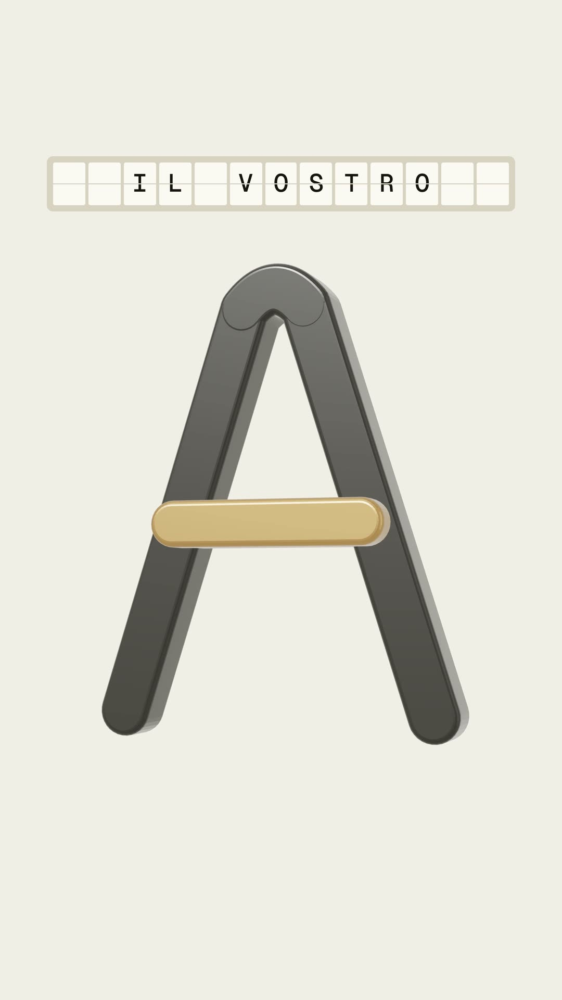
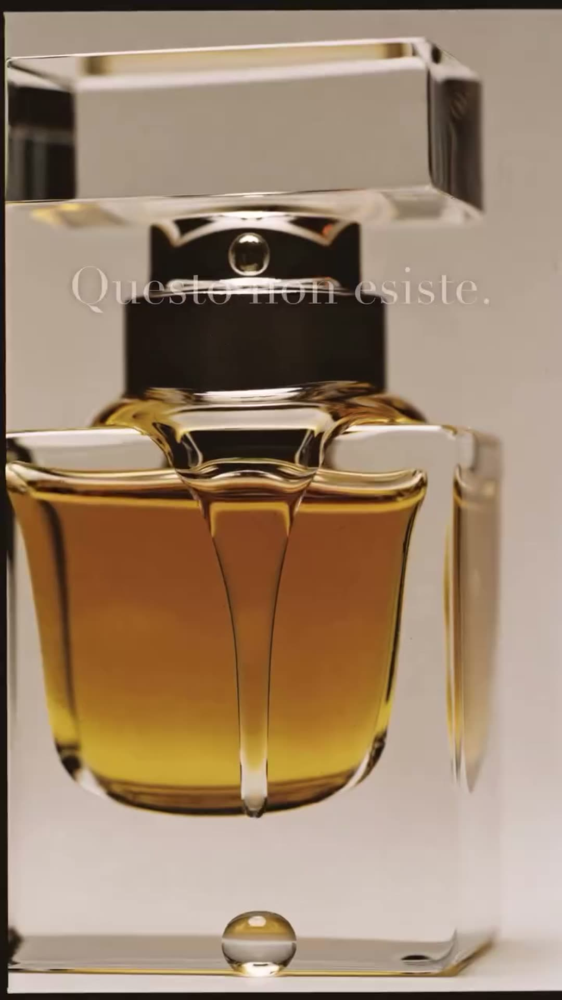
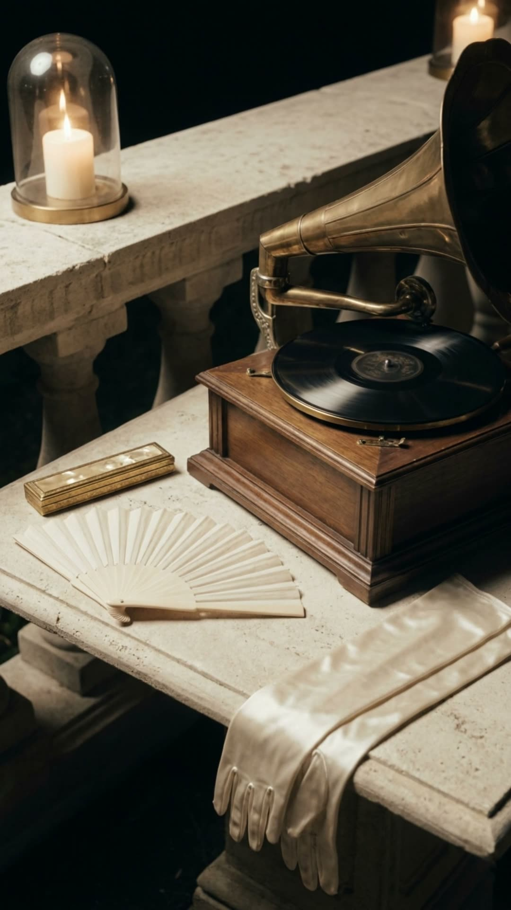
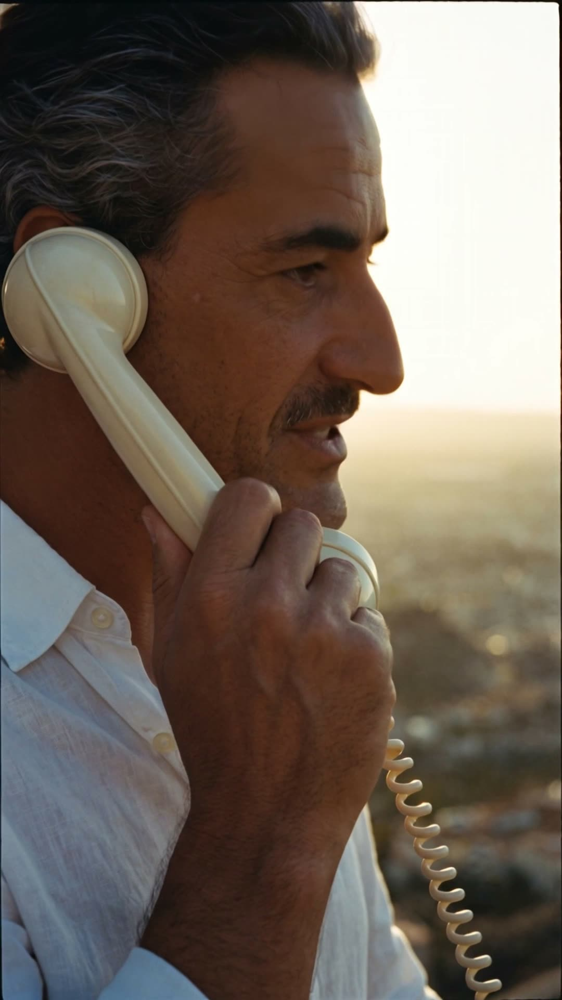
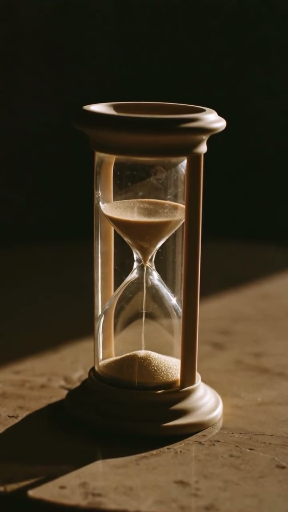
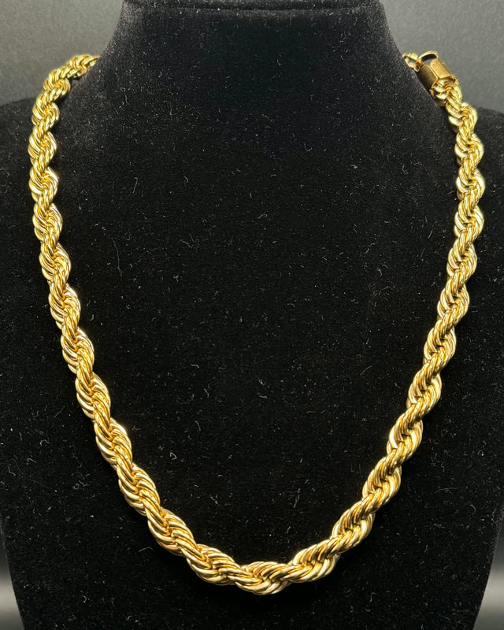
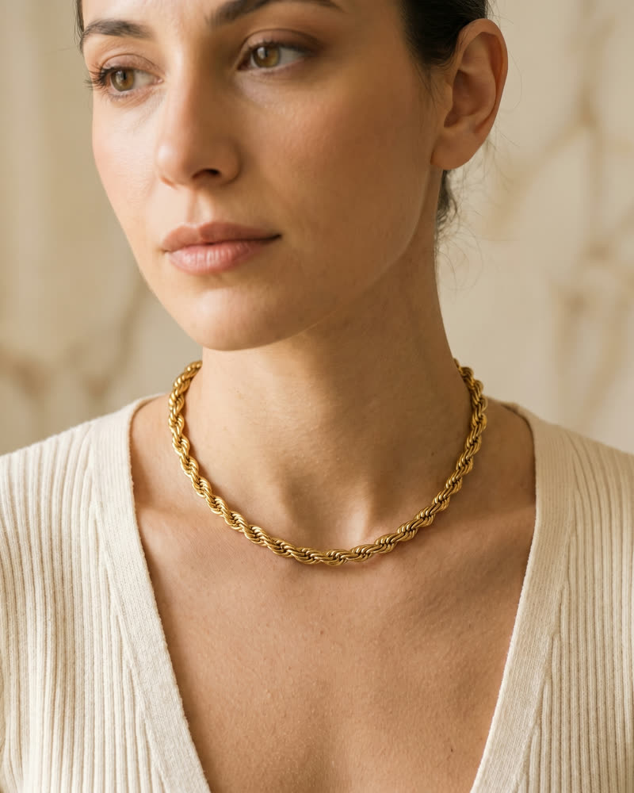
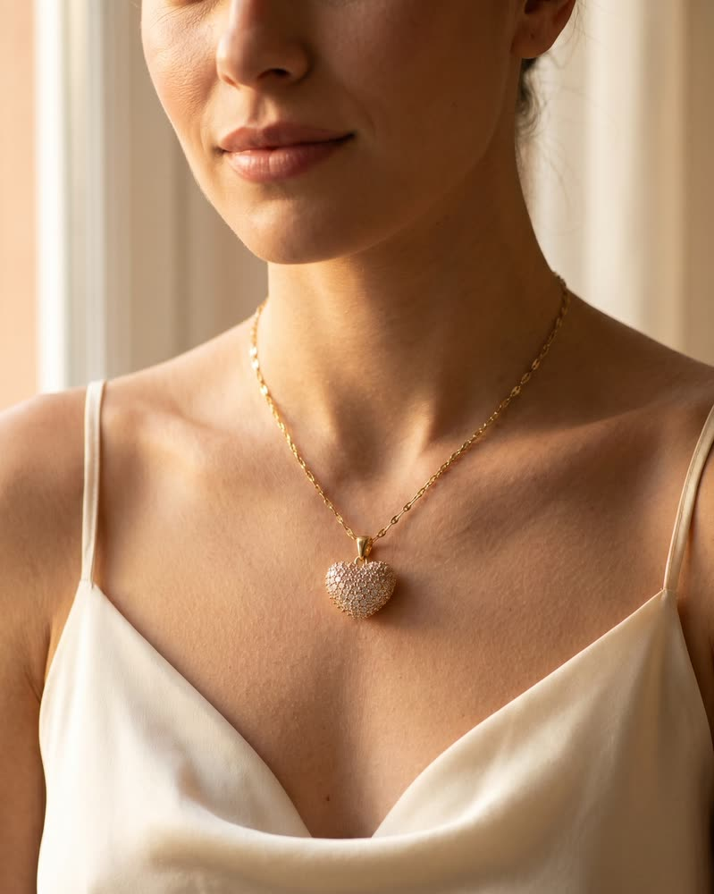
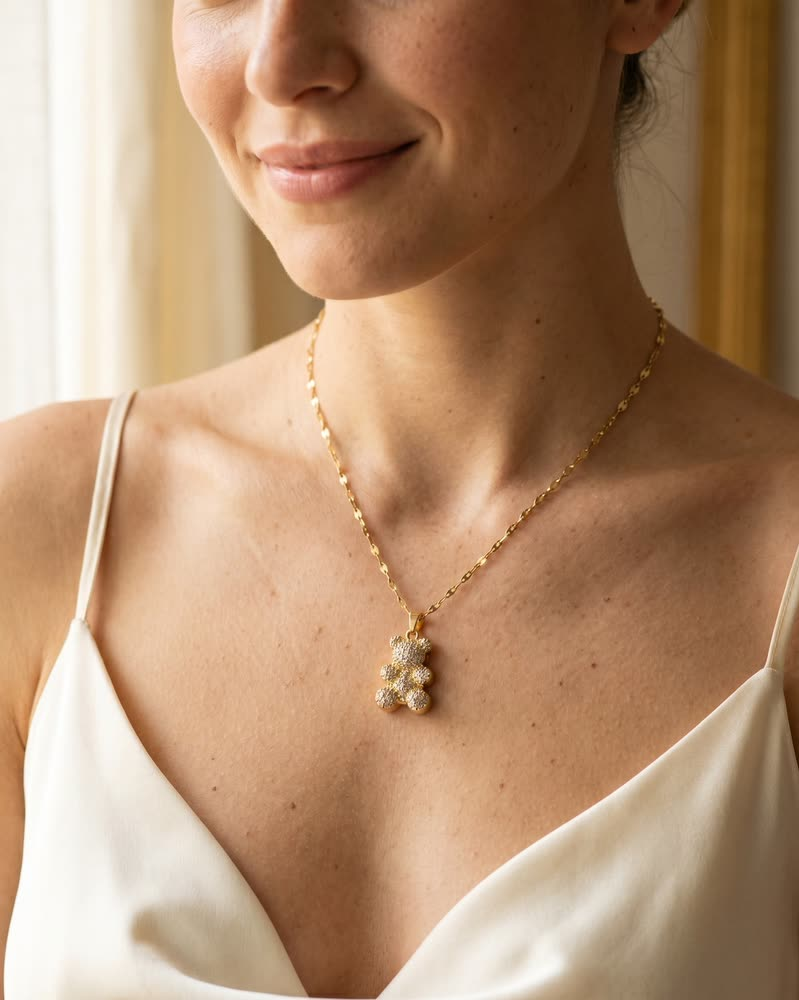
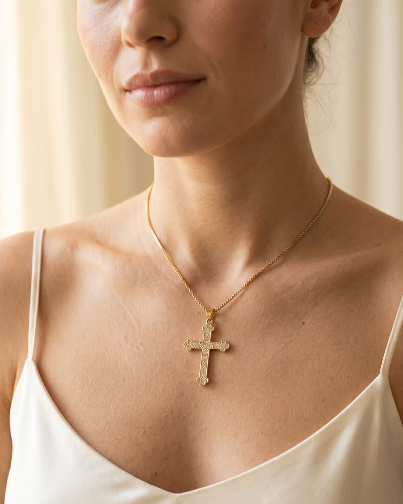

Foto e video Ci mandi due foto. Ti torna il mese. Cosa mandiDue o tre foto dal telefono per ogni prodotto, da angoli diversi. Cosa riceviOgni mese scatti, reel e brevi video nati dagli scatti, nei formati del negozio e dei social, con le didascalie e il piano del mese. In quanto tempoLa prima consegna entro 7 giorni lavorativi. Da quantoDa €290 al mese. Oppure un progetto solo, da €249. I canoni e i progetti, nel listino
I tuoi social e il tuo negozio Pubblichiamo noi. Cosa mandiI contenuti, o li facciamo noi con Foto e video. E l'accesso ai profili come collaboratore, senza darci la password. Cosa riceviIl piano del mese da approvare, fino a 12 pubblicazioni al mese su tre canali, le didascalie con la tua voce, il profilo in ordine. Con Il tuo negozio online, anche i prodotti e la home sempre aggiornati. In quanto tempoSi parte entro 7 giorni lavorativi dal primo piano approvato; i prodotti nuovi sono online in 3 giorni lavorativi. Da quanto€290 al mese ciascuno. €190 se lo aggiungi a un altro canone: è l'unico sconto, uguale per tutti. Social e negozio, nel listino
Aura Gioielli · il nostro e-commerce, un progetto del fondatore Lo facciamo già, per noi. Aura Gioielli è il nostro e-commerce. Ogni immagine del negozio nasce in studio, e adesso anche il negozio. La foto vera del gioielloLo scatto che apre la sua pagina sul negozioUno scatto diventato videoIl sito nuovo, in arrivo online Guarda il caso Aura 1 · La foto vera 2 · Lo scatto sul negozio 3 · Lo scatto, in video 4 · Il sito nuovo · in arrivo online
     Il manifesto e cinque film Un Mondo intorno al tuo prodotto Una campagna con una storia: l'idea, 6 scatti, 2 video e le versioni per la pubblicità. Qui, il manifesto di Avoria e cinque film nati in studio. Un progetto, da €1.200. Il Mondo, nel listino Guarda i Mondi
I clienti che ti scrivono Alle 02:14 tu dormi. Risponde l'AI. Cosa mandiL'indirizzo del negozio e un'ora di call per decidere cosa passare a te. Cosa riceviUna chat sul tuo sito che risponde su prodotti, spedizioni, resi e pagamenti leggendo le pagine del negozio. Si presenta come assistente AI; quello che non sa lo passa a te, e la mattina trovi il riepilogo della notte. In quanto tempo2 settimane. Prima di accenderlo lo proviamo con 30 domande vere. Da quanto€990 di avvio, poi €90 al mese. L'assistente, nel listino
Le foto del catalogo, da sole Aggiungi un prodotto: le sue foto si fanno da sole. Cosa mandiL'accesso al negozio, Shopify o WooCommerce, e i primi 20 prodotti da cui partire. Cosa riceviQuando aggiungi o cambi un prodotto, le sue foto ambientate si fanno da sole, nei formati del negozio, di Amazon, Etsy e simili e della pubblicità, e le controlliamo prima che escano. In quanto tempo3 settimane. Da quanto€1.900 di avvio, poi €390 al mese. iltuonegozio.it/admin Il tuo negozio OggiOrdiniProdottiClienti Nuovo prodottoSalva Prodotto salvato · le foto si preparano Aggiungi le foto   Dal telefono TitoloCollana Corda FotoNessuna foto1 foto dal telefonoIn preparazione…Pronta: la guardiamo noi Sul negozioControllata · online Già sul negozio, nello stesso stile Collana Cuore Collana Orsacchiotto Collana Croce Esempio · foto vere, dalla nostra prova del catalogo: aggiungi il prodotto e la sua foto si fa da solaGuarda la prova
Dal messaggio al preventivo · per chi vende su misura o a quantità Il messaggio del cliente diventa un preventivo. Cosa mandiIl tuo listino e i canali da cui arrivano le richieste: DM, email, modulo del sito, fino a 3. Cosa riceviLe richieste finiscono in un solo elenco, il preventivo si scrive da solo dal tuo listino e tu lo approvi. I promemoria ai clienti partono da soli. In quanto tempo3–4 settimane. Da quanto€2.400 di avvio, poi €290 al mese. 10:42 SR Studio Rossistudio.rossi.eventi SRStudio Rossistudio.rossi.eventiVisualizza profilo Oggi 10:41 Buongiorno! Fate vasi con il logo inciso? SRCe ne servono 40 per un evento aziendale, entro il 15 novembre. Ecco il preventivo per i 40 vasi, valido 15 giorni. Preventivo n. 11840 Vasi Arco con logo · €960,00 + IVAApri il PDF 11:20 SRPerfetto, confermiamo! Messaggio… Bozza del preventivola vedi solo tu ClienteStudio Rossi ArticoloVaso Arco, logo inciso Quantità40 Prezzo€24,00 l'uno dal tuo listino Consegnaentro il 15 novembre Totale€960,00 + IVA ModificaApprova e invia Esempio · il cliente scrive in DM, tu approvi, il preventivo parte nella stessa chat
Il gestionale su misura · dopo l'analisi Ordini, magazzino o prenotazioni in un'app fatta sul tuo modo di lavorare. Cosa mandiMezz'ora di call per raccontarci come lavori, poi l'analisi, da €690. Cosa riceviUn'app per ordini, magazzino, preventivi o prenotazioni, costruita sul tuo modo di lavorare. Il codice e i dati sono tuoi. In quanto tempoLo fissiamo dopo l'analisi, e lo scriviamo nel preventivo. Da quantoDa €6.900, poi la manutenzione da €240 al mese. gestionale.ceramichelevante.it CLCeramiche Levante OggiOrdiniMagazzinoClientiPreventivi Oggimartedì 14 ottobre Preventivo n. 118 accettato · Studio Rossi Ordini da preparare #1046Studio RossiNuovo40 Vasi Arco, logo inciso · entro il 15 nov #1045Marco T.Pronto2 Brocche Levante #1044Hotel MiramareIn corso12 set di piatti Soglia #1043Giulia M.Da spedire1 Vaso Arco Magazzino Vaso Arco12Ne servono 40: ne mancano 28 Set piatti Soglia30 Brocca Levante8 Ordino 30 Vasi Arco alla Fornace Bini? Arrivano in 6 giorni, in tempo per il 15 novembre. Più tardiInvia l'ordine Ordine inviato alla Fornace Bini · arrivano il 21 ottobre Esempio · un'app col nome del tuo negozio: il preventivo accettato diventa un ordine, e il magazzino avvisa da solo